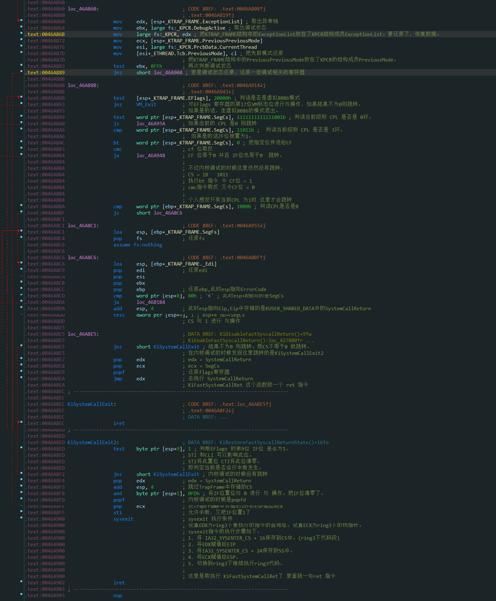

# 楔子
学完 APC 后，梳理一下学到的知识，看看能不能从 3 环进 0 环再回 3 环来。
# 流程梳理
以 R3 函数 ReadProcessMemory 为例
先分析函数调用流程
ReadProcessMemory 调用了从 ntdll 中 导入的函数 NtReadVirtualMemory
在 ntdll 中查看 此函数
_NtReadVirtualMemory@20 proc near | |
mov eax, 0BAh ; NtReadVirtualMemory | |
mov edx, 7FFE0300h | |
call dword ptr [edx] | |
retn 14h |
可以看到这个函数只有短短几行汇编代码：给 eax 赋个值，然后给 edx 个地址，然后 call 一下 edx 指向的地址，然后就平栈（由于 STDCALL 调用约定）返回了。
首先我们要知道 这里调用的是什么函数
在 0x7FFE0000 的位置是一个名为 KUSER_SHARED_DATA 的结构体，这个结构体与 0 环 FFDF0000 存储的数据一模一样，是由同一个物理页映射的。
在其偏移 0x300 的位置有一个成员其存储的就是调用方式，如今的 CPU 都支持快速调用了，所以一般存储的是 ntdll 中的 KiFastSystemCall 函数
查看这个函数
_KiFastSystemCall@0 proc near | |
mov edx, esp | |
sysenter |
将 esp 存储在 edx 中后就执行了 sysenter 指令
sysenter 指令就是取出了存储在 MSR 寄存器中的 CS、ESP、EIP，这是提升权限所必须的
这个时候 EIP 改变了，在我的计算机上 MSR [176] 中存储的地址是内核文件中的 KiFastCallEntry 函数
快速调用进 0 环后，0 环的堆栈指向 TrapFrame+0x78 的位置，接下来的
就是填充这个结构了。
填充完毕后，也就是保存好 3 环的堆栈和寄存器环境后
准备调用 0 环的函数。
调用完函数后 ebp 和 esp 又指向了 TrapFrame
判断 ETHREAD 是否有用户 APC 需要处理，如果有就处理 APC，一直到没有用户 APC 需要处理，这里是一个循环。
没有用户 APC 需要处理后就跳出了循环
后面的一些汇编代码我在内核中跟了一下。
如下：

以上汇编代码只有在最后跳到了 KiSystemCallExit2 中 其他判断都没跳。